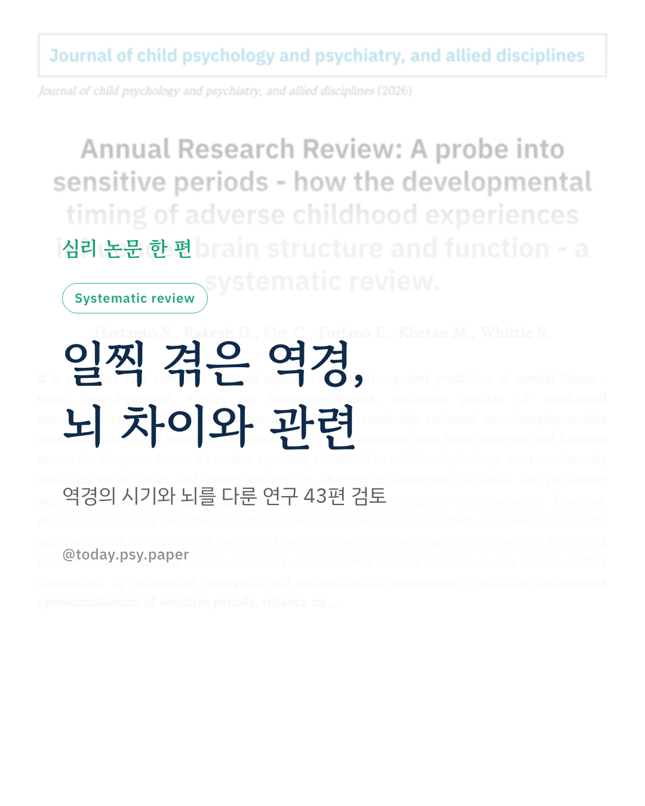
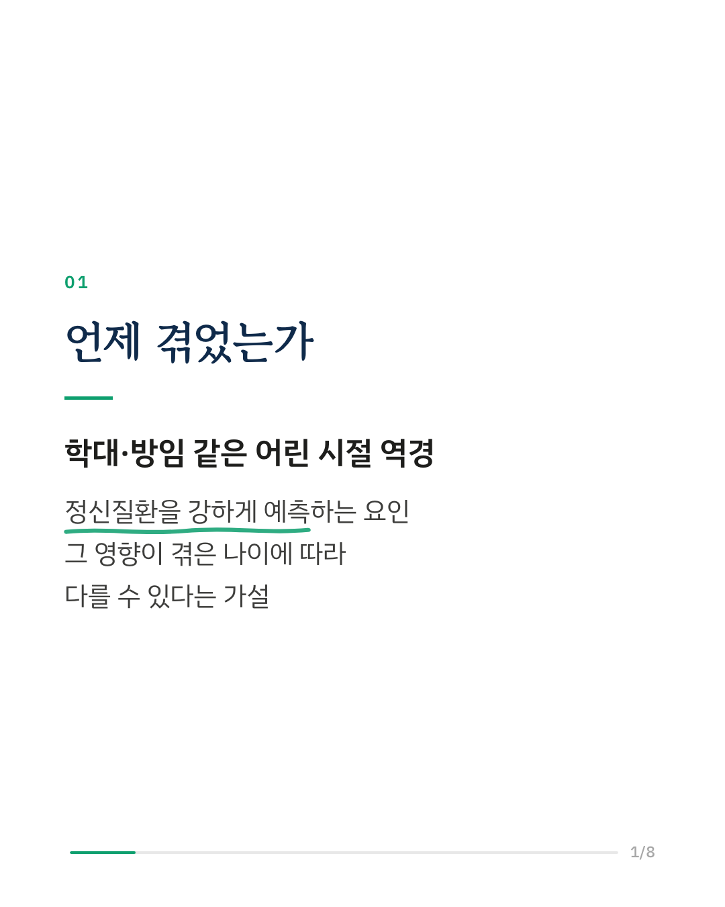
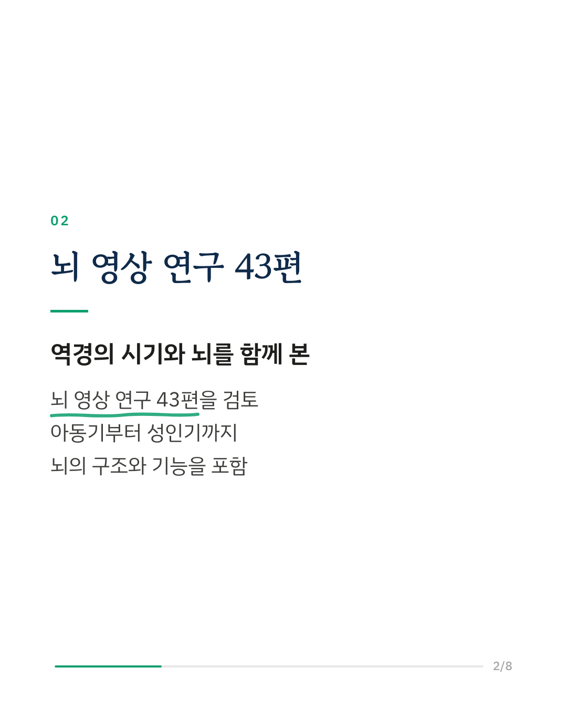
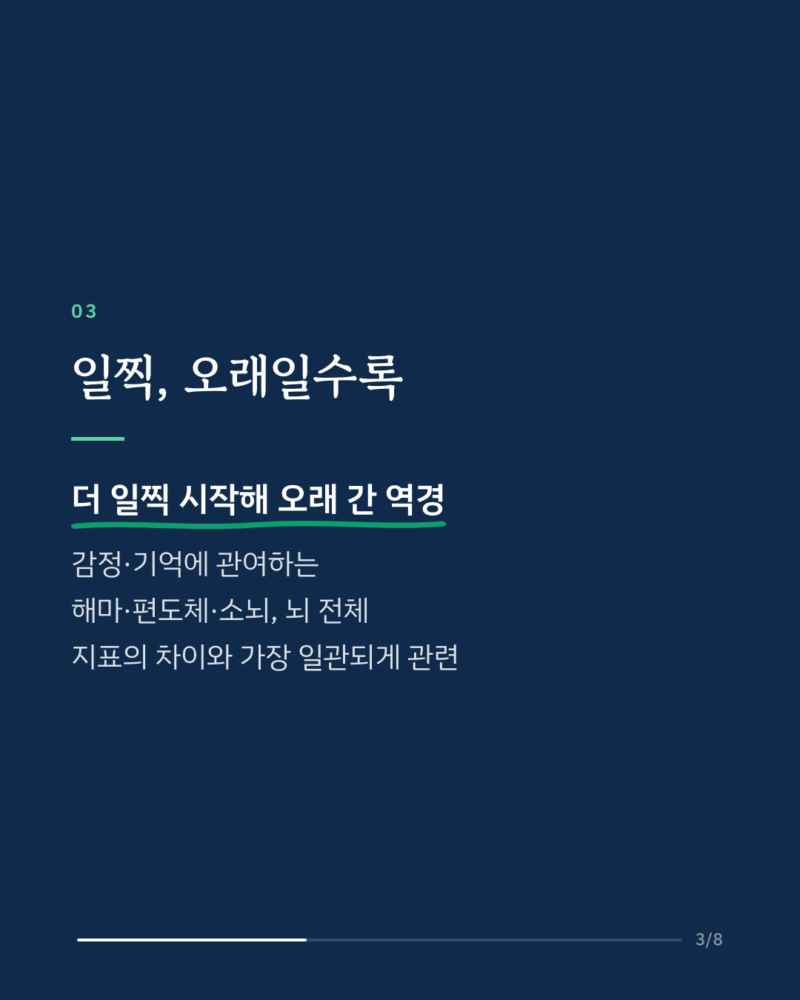
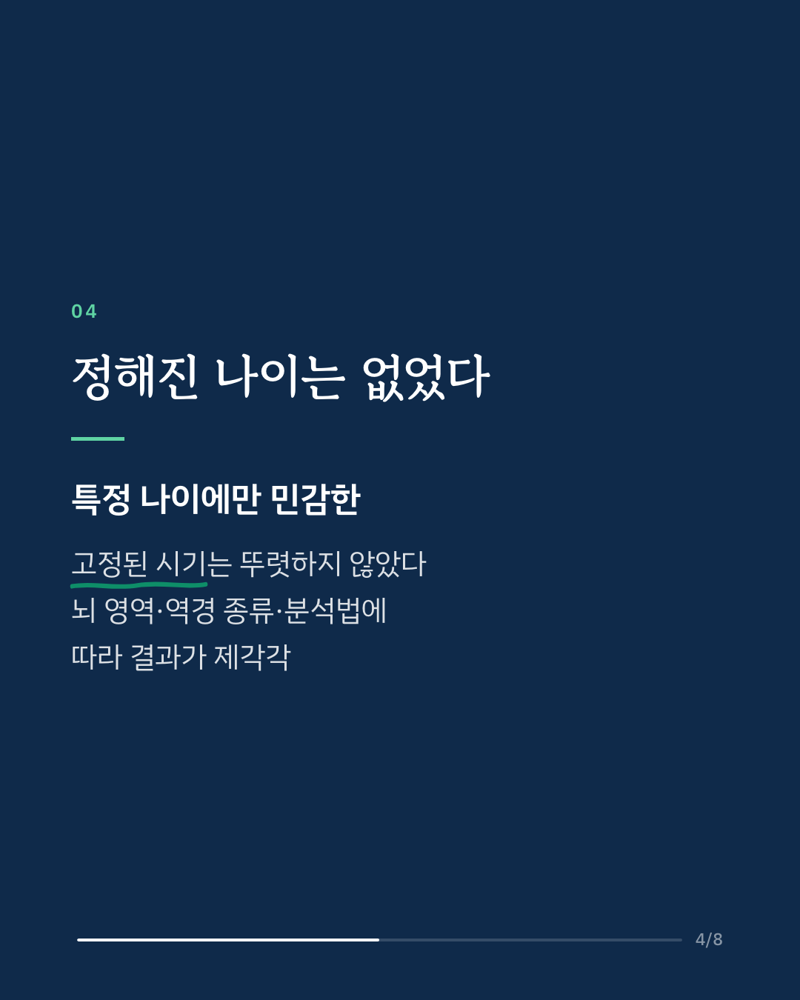
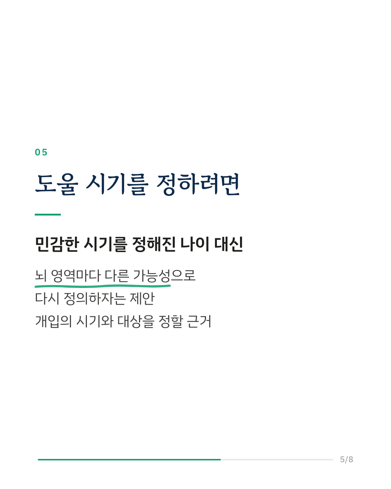
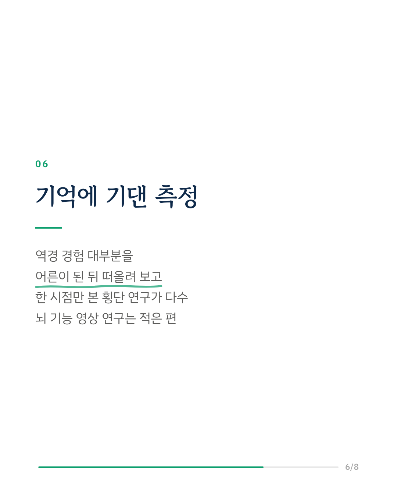
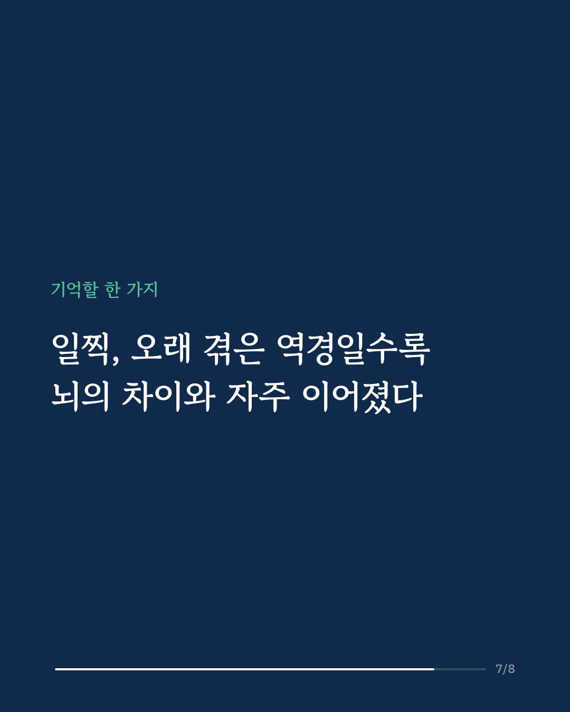
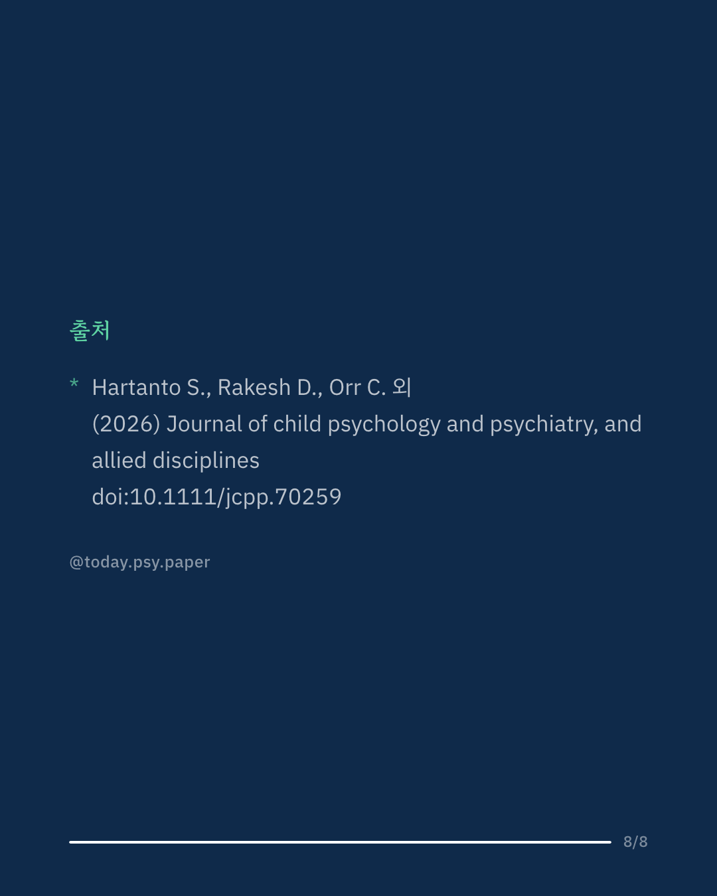

학대나 방임 같은 어린 시절 역경, 흔히 말하는 어린 시절 트라우마는 훗날 정신질환을 강하게 예측하는 요인입니다. 연구자들은 이 역경을 '몇 살에, 얼마나 오래' 겪었는지가 뇌 발달에 다른 흔적을 남기는지 알아보기 위해 뇌 영상 연구 43편을 체계적으로 검토했습니다. 가장 일관된 결과는 더 일찍 시작되고 더 오래 이어진 역경이 감정과 기억에 관여하는 해마·편도체, 소뇌, 그리고 뇌 전체 크기 같은 지표의 차이와 관련이 있었다는 점입니다. 반면 특정 나이에만 뇌가 유난히 민감한 '정해진 시기'가 있다는 근거는 뇌 영역, 역경의 종류, 분석 방법에 따라 엇갈렸습니다. 연구진은 민감한 시기를 고정된 나이 구간으로 보기보다, 뇌 영역마다 다르고 역경의 성격과 지속 기간에 따라 달라지는 가능성으로 다시 정의하자고 제안합니다. 이는 역경을 겪은 아이들을 언제, 어떻게 도울지 정하는 데 근거가 될 수 있습니다. 다만 포함된 연구 대부분이 어른이 된 뒤 떠올린 기억으로 역경을 측정했고, 한 시점만 살핀 횡단 연구였습니다. Journal of Child Psychology and Psychiatry (2026), 'Annual Research Review: A probe into sensitive periods - how the developmental timing of adverse childhood experiences influences brain structure and function - a systematic review.' DOI: 10.1111/jcpp.70259 #임상심리 #심리학연구 #논문리뷰 #아동기역경 #어린시절트라우마 #뇌발달 #발달심리 #정신건강정보
python3 publish.py 42946537